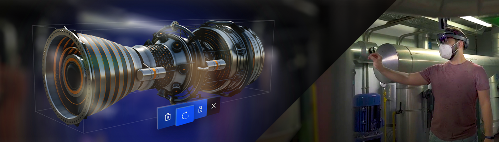

XR (Extended Reality)

XR (Extended Reality) covers every application that mixes the user's view with computer-generated content, from fully virtual worlds to digital objects placed in a real room. Evergine gives all of them one API: a scene written for a desktop window runs in a headset by changing the launcher project, not the scene.
This section explains that API, the XR runtimes Evergine integrates with, and the components that bring headsets, controllers and hands into your entities.
Types of XR experience
Virtual Reality (VR)
The application replaces the user's surroundings with a completely virtual environment.
Mixed Reality (MR)
The application combines its virtual content with the user's real environment, and lets both interact. On Meta Quest this is built on passthrough.
Augmented Reality (AR)
The application draws its content over a live view of the real world, usually through a phone camera. In Evergine this is what the WebXR integration provides.

How Evergine XR works
XR support is built into the Evergine.Framework and Evergine.Components packages. The framework defines one abstract service, XRPlatform. Each XR runtime integration is a separate package that implements it:
| Package | Service | Runtime | Project template |
|---|---|---|---|
| Evergine.OpenXR | OpenXRPlatform |
Any OpenXR runtime: Meta Quest, Pico, Android XR, and PC headsets through their OpenXR runtime | Android Meta Quest, Android Pico, Android XR, Windows OpenXR |
| Evergine.OpenVR | OpenVRPlatform |
SteamVR on Windows | None |
| Evergine.WebXR | WebXRPlatform |
Browsers that implement the WebXR Device API | WebXR (Experimental AR) |

Your scene only depends on XRPlatform. The launcher project of each profile creates one implementation and registers it, and the platform moves the active Camera3D with the headset every frame.
Feature support
What each platform implements in this release. A cell with an extension name means the feature works when that OpenXR extension is in the list passed to the OpenXRPlatform constructor. Runtime-dependent means the template does not request the extension: you can add it to the list, and the feature then works only if the headset's OpenXR runtime supports it.
| Feature | OpenXR · Meta Quest | OpenXR · Pico | OpenXR · Android XR | OpenXR · Windows PC | OpenVR (SteamVR) | WebXR |
|---|---|---|---|---|---|---|
| Head tracking and stereo rendering | Yes | Yes | Yes | Yes | Yes | Single view (EyeCount is 1) |
| Mirror window on the desktop | Off in the template | Off in the template | Off in the template | Yes | Yes | No |
Controllers (TrackXRController) |
Yes | Yes | Select and menu (simple controller profile) | Yes | Yes | No |
Generic trackers and base stations (AdvancedTrackXRDevice) |
No | No | No | No | Yes | No |
Articulated hands (TrackXRArticulatedHand) |
XR_EXT_hand_tracking |
XR_EXT_hand_tracking |
XR_EXT_hand_tracking, with the hand tracking permission |
Runtime-dependent | No | No |
| Pinch and aim gestures on hands | XR_FB_hand_tracking_aim |
Runtime-dependent | XR_FB_hand_tracking_aim |
Runtime-dependent | No | No |
Hand meshes (XRDeviceRenderableModel) |
XR_FB_hand_tracking_mesh |
Runtime-dependent | XR_FB_hand_tracking_mesh |
Runtime-dependent | No | No |
Controller models (XRDeviceRenderableModel) |
No | No | No | No | Yes | No |
| Hands and controllers at the same time | XR_META_simultaneous_hands_and_controllers |
Runtime-dependent | No | Runtime-dependent | No | No |
| Passthrough | XR_FB_passthrough |
Runtime-dependent | No | Runtime-dependent | No | No |
| Passthrough projected on meshes | XR_FB_triangle_mesh |
Runtime-dependent | No | Runtime-dependent | No | No |
| Real world view through the environment blend mode | Runtime-dependent | Runtime-dependent | AlphaBlend or Additive |
Runtime-dependent | No | No |
| Camera see-through on a phone (AR) | No | No | No | No | No | Yes (immersive-ar) |
Note
XRPlatform also declares spatial mapping, spatial anchors, trackable items, light estimation, feature points and eye gaze members. No platform in this release implements them, so they return null (or false) everywhere.